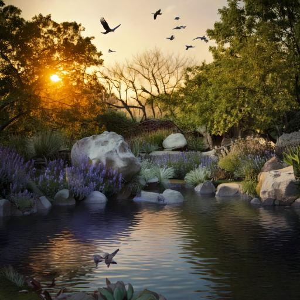
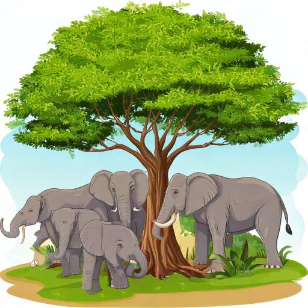
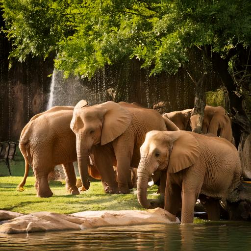
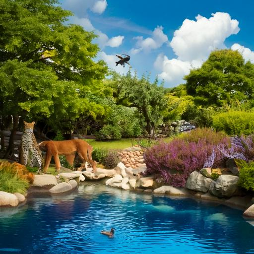

The Role of Zoos for animals and Human beings
Conservation:
According to the IUCN, 39 animal species are going extinct.
It is not wrong to say that the zoo is a very important place for many species' conservation and survival.
Nowadays, many animals are going extinct; zoo helps prevent
animals from extinction by providing safe environments or safe habitats for endangered animals.
Therefore, with the help of the zoo provides a breeding program, which increases the number of critically
low species populations. As we know, it looks doubtful that species survive in wildlife.
Therefore, the zoo is one place where there is always a set of insurance populations.
biodiversity:
Zoos also play an important role in maintaining genetic diversity,
which plays an important role in improving species, long-term survival chances.
Such as Zoos provide captive breeding programs for endangered species,
which help in managing genetic diversity within those populations.
Zoos also play a very important role in reintroducing animals back into the wildlife,
which has fewer populations in their natural habitat.
This practice of retro animals is called “ex-situ” conservation,
which means conservation outside of the natural environment.
Veterinary Care for Animals:
As we see, animals in zoos constantly receive veterinary care,
which helps them with early detection and treatment of diseases.
Veterinary care contributes to improving quality of life and allows them to live longer and healthier lives.
Therefore, in zoos, veterinarians care provides for all sorts of animals,
such as keeping care from tiny frogs to huge elephants.
This care is also very important because of the successful breeding programs for Conservation
Research opportunity for scientists:
A zoo is a place where research opportunities are provided to scientists.
A zoo is a place that provides a controlled environment for scientists,
where scientists study animal behavior, physiology, and ecology,
which helps scientists to better understand wild populations.
Zoo provides scientific investigation and experimentation,
through which scientists collect important data for the management of both wild and zoo animals.
Usually, scientists work in the zoo, used by many universities,
such as many undergraduates and postgraduates doing their projects in the zoo setting.
Most academics use zoo animals as a model for their research. So, in that way,
the zoo provides opportunities and access to the different species for many universities and institutions.
Educate people about wild Animals:
A zoo is a place where research opportunities are provided to scientists.
A zoo is a place that provides a controlled environment for scientists,
where scientists study animal behavior, physiology, and ecology,
which helps scientists to better understand wild populations.
Zoo provides scientific investigation and experimentation,
through which scientists collect important data for the management of both wild and zoo animals.
Usually, scientists work in the zoo, used by many universities,
such as many undergraduates and postgraduates doing their projects in the zoo setting.
Most academics use zoo animals as a model for their research. So, in that way,
-



